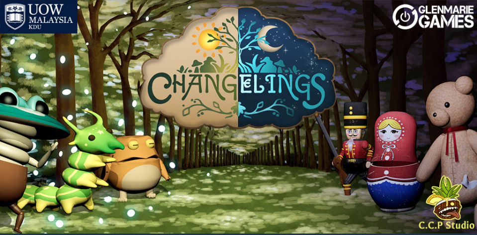

Changelings

Changelings is a whimsical single-player, 3D (orthographic) real-time strategy game for mobile. Players take on the role of the forest spirit, defending a magical village of sentient creatures—called Changelings—from corrupted toys sent by an evil toymaker. Gameplay revolves around deploying units along lanes to stop advancing enemies and ultimately destroy their base. Each Changeling has two distinct modes tied to the day–night cycle, which shifts every 30 seconds, forcing players to adapt strategies on the fly. For example, a frog may explode during the day but devour enemies at night. Players must manage spirit, the game’s main resource, to summon units, balancing cooldowns, placement, and team composition. The core loop is simple but grows in complexity across levels: deploy units, counter enemy waves, manage resources, and survive until the enemy base falls. The game’s design pillars—whimsical art style, dynamic day–night shifts, and dual-form units—combine to create a light but engaging strategy experience accessible to casual players while still offering tactical depth.
Click Here To Play